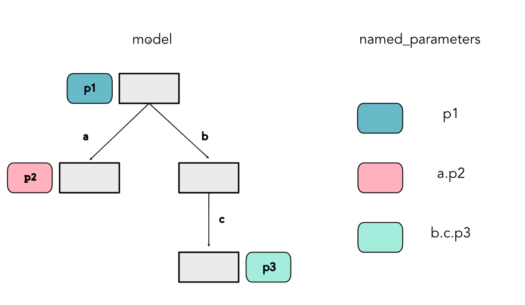

Machine Learning Engineering
Lecture 4
Models and Modules
Class Note
You need to link your GitHub account
Still 25 students with unlinked accounts
Lecture Quiz
Outline
Visualization
Datasets
Modules
Visualization
Main Idea
Show properties of your model as you code
See real time graphs as you train models
Make convincing figures of your full system
Library: Visdom
Generic image pasteboard
>>> visdom &Protip: Multiplexing
When coding you will often need multiple windows
tmux - is a generic option for doing this
Code Snippet
Visdom windows
import visdom
vis = visdom.Visdom()
vis.text('Hello, world!', win="hello")Practical Advice
Many other ML tailored options
Tensorboard
Hosted services: Weights and Biases, Comet
Later in the Semester
Lecture on more ML visualization
More specialized and custom visual design
Datasets
Sneak Preview
Task 0.5: Intro to our first ML problem
Basic separation of points on a graph
Manual classifier
Sneak Preview
Modules
Managing Shapes
Inception - Standard for Image Recognition

Real World Examples
Block from Inception
class Inception3(nn.Module):
def __init__(self, num_classes=1000, aux_logits=True, transform_input=False,
inception_blocks=None, init_weights=None):
super(Inception3, self).__init__()
...
conv_block = inception_blocks[0]
inception_a = inception_blocks[1]
inception_b = inception_blocks[2]
inception_c = inception_blocks[3]
inception_d = inception_blocks[4]
inception_e = inception_blocks[5]
inception_aux = inception_blocks[6]
self.aux_logits = aux_logits
self.transform_input = transform_input
self.Conv2d_1a_3x3 = conv_block(3, 32, kernel_size=3, stride=2)
self.Conv2d_2a_3x3 = conv_block(32, 32, kernel_size=3)
self.Conv2d_2b_3x3 = conv_block(32, 64, kernel_size=3, padding=1)
self.maxpool1 = nn.MaxPool2d(kernel_size=3, stride=2)
self.Conv2d_3b_1x1 = conv_block(64, 80, kernel_size=1)
self.Conv2d_4a_3x3 = conv_block(80, 192, kernel_size=3)
self.maxpool2 = nn.MaxPool2d(kernel_size=3, stride=2)
self.Mixed_5b = inception_a(192, pool_features=32)
self.Mixed_5c = inception_a(256, pool_features=64)
self.Mixed_5d = inception_a(288, pool_features=64)
self.Mixed_6a = inception_b(288)
self.Mixed_6b = inception_c(768, channels_7x7=128)
self.Mixed_6c = inception_c(768, channels_7x7=160)
self.Mixed_6d = inception_c(768, channels_7x7=160)
self.Mixed_6e = inception_c(768, channels_7x7=192)
if aux_logits:
self.AuxLogits = inception_aux(768, num_classes)
self.Mixed_7a = inception_d(768)
self.Mixed_7b = inception_e(1280)
self.Mixed_7c = inception_e(2048)
self.avgpool = nn.AdaptiveAvgPool2d((1, 1))
self.dropout = nn.Dropout()
self.fc = nn.Linear(2048, num_classes)Modules
Mini-language for building shapes
Stores and accesses elements of the model
Object-oriented style to maintain data
Module Storage
Stores three things:
Parameters
Submodules
Generic Python attributes
Parameters
Everything that is learned in the model
Controlled and changed outside the class
Submodules
Other modules that are called
Store their own parameters and submodules
Together forms a tree
Everything Else
Modules act mostly like standard python objects
You can have additional information stored
Homework Note
Must be recursive implementation
Have to walk the full tree
Module Example
Simple
class MyModule(minitorch.Module):
def __init__(self, arg):
super().__init__()
self.parameter1 = Parameter(15)
self.data = 25
self.sub_module = OtherModule(arg, arg+10)
print(MyModule)<class '__main__.MyModule'>
How does this work?
Internally
Modulespies to findParameterandModuleobjectsA list is stored internally.
Implemented through Python magic methods
Interception Code
Module construction
def __setattr__(self, key, val):
if isinstance(val, Parameter):
self.__dict__["_parameters"][key] = val
elif isinstance(val, Module):
self.__dict__["_modules"][key] = val
else:
super().__setattr__(key, val)All subclasses must begin their initialization by calling
super().__init__()Module Example
Modules
class Module1(minitorch.Module):
def __init__(self):
super().__init__()
self.p1 = Parameter(5)
self.a = Module2()
self.b = Module3()
class Module2(Module):
def __init__(self):
super().__init__()
self.p2 = Parameter(10)
class Module3(Module):
def __init__(self):
super().__init__()
self.c = Module4()
class Module4(Module):
def __init__(self):
super().__init__()
self.p3 = Parameter(15)Module Naming
Real World Examples

Real World Examples
Block from GPT-2
class Block(nn.Module):
def __init__(self, n_ctx, config, scale=False):
super().__init__()
hidden_size = config.n_embd
inner_dim = config.n_inner if config.n_inner is not None else 4 * hidden_size
self.ln_1 = nn.LayerNorm(hidden_size, eps=config.layer_norm_epsilon)
self.attn = Attention(hidden_size, n_ctx, config, scale)
self.ln_2 = nn.LayerNorm(hidden_size, eps=config.layer_norm_epsilon)
if config.add_cross_attention:
self.crossattention = Attention(hidden_size, n_ctx, config, scale, is_cross_attention=True)
self.ln_cross_attn = nn.LayerNorm(hidden_size, eps=config.layer_norm_epsilon)
self.mlp = MLP(inner_dim, config)